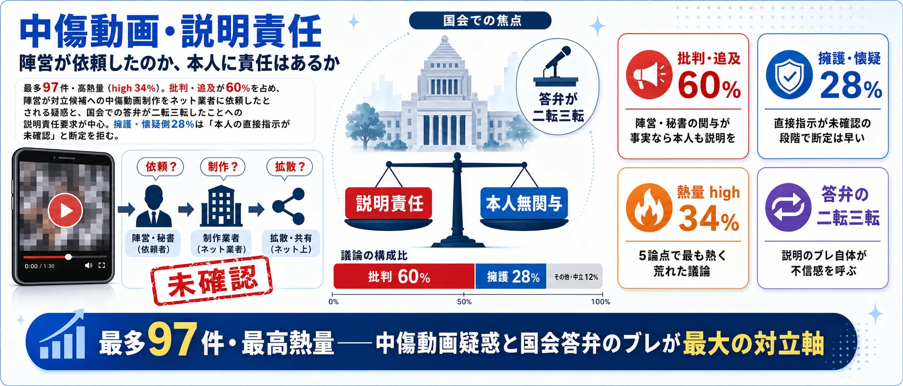
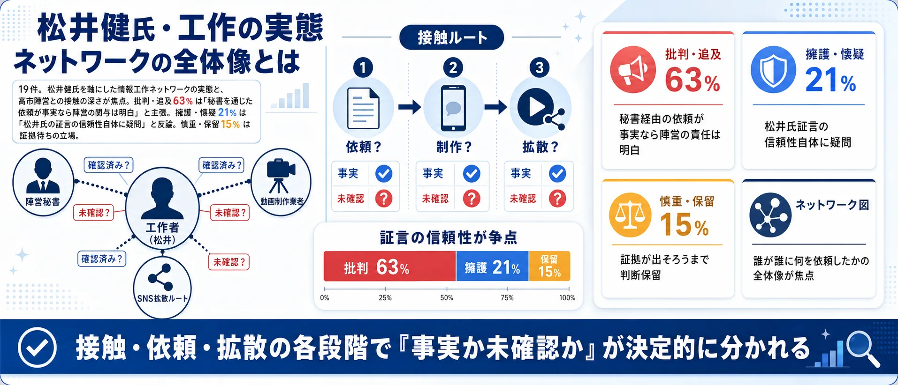
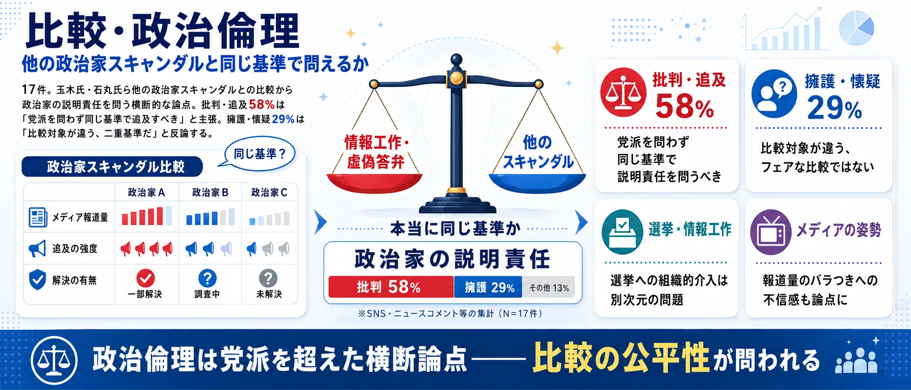

分析対象の意見
359件
説明責任、報道の真偽、派生論点を5分類
中傷動画疑惑・文春報道・サナエトークン——あなたが気になる論点はどれ？
収集したSNS投稿のうち、分析対象となった意見359件をAIが5つの論点に整理しました。世論調査ではなく、SNS反応サンプルの論点比較です。
説明責任、報道の真偽、派生論点を5分類
動画への関与と説明責任の範囲が最大争点
「賛成か反対か」の二元論では見えない、動画の事実・報道の信頼性・暗号資産・人脈・他の政治家との比較という5つの切り口を整理しました。画像をクリックすると拡大できます。
中傷動画・説明責任 — 「陣営が依頼したのか、本人に責任はあるか」171件
5論点中で最多・高熱量。陣営が対立候補への中傷動画を制作依頼したとされる疑惑と、国会答弁の二転三転への追及が核心。

文春報道の真偽 — 「捏造か事実か、メディアを信じるか」84件
5論点で唯一「擁護・懐疑」が93%を占める逆転論点。証拠動画のタイムスタンプ矛盾を指摘し捏造と断じる声が圧倒的。

サナエトークン疑惑 — 「被害6億円、関与の範囲はどこまで」57件
仮想通貨の暴落と被害補償が発端。SNSリポストを関与の証拠とみるか、第三者事業として切り離すかで評価が割れる。

松井健氏・工作の実態 — 「ネットワークの全体像とは」26件
松井健氏を軸にした情報工作ネットワークの構造と、高市陣営秘書との接触の深さが焦点。証言の信頼性自体も争点。

比較・政治倫理 — 「他の政治家スキャンダルと同じ基準で問えるか」21件
玉木氏・石丸氏ら他の政治家スキャンダルとの比較から政治倫理を問う横断的な論点。比較の公平性自体が争点になる。

※ SNS投稿447件をAIが分類した結果です。世論調査ではありません。
まず重く見る論点を選び、次に「高市文春問題」への考えを選んでください。
1最も気になる論点を選ぶ （全2問）
中心の「高市文春問題」を5つの論点が囲みます。扇の幅は投稿数、中心からの距離はAIが分類した表現の熱量、色は立場（赤=説明責任追及 / 青=高市氏擁護 / 黄=懐疑的 / 灰=中立）。点をクリックすると元のX投稿を開きます。
2025年、週刊文春が「高市早苗氏の陣営が対立候補への中傷動画をネット業者に依頼した」と報道。本人の関与の有無と説明責任の範囲が、最大の争点となっています。
説明責任と辞任を強く求める怒りの投稿
@Norisuke_Occhan の投稿をXで見る
説明責任を果たさない対応と擁護する風潮を批判
@bonmoment39 の投稿をXで見る
週刊文春の報道自体が正確かどうかが争点になっています。捏造・印象操作だとして高市氏を擁護する声と、報道を信頼して批判を続ける声が真っ向から対立しています。
文春報道をでっち上げと断じ高市氏を擁護
@ows_skin の投稿をXで見る
文春報道を信じ高市氏批判の立場を表明
@KDMCYcpefGyBUq7 の投稿をXで見る
仮想通貨「サナエトークン」の暴落による被害が中傷動画問題と絡み合い、高市氏事務所スタッフがリポストしていたことも報じられました。被害補償の状況や関与の深さが問われています。
被害6億円を挙げ高市氏への説明責任要求
@x_mariko_x22 の投稿をXで見る
サナエトークンは第三者の事業で高市氏を擁護
@2kaGB7Ctmu1bZAy の投稿をXで見る
SNS工作業者とされる松井健氏が高市陣営と接触したとされる実態と、藤井聡氏らとの人脈が焦点です。松井氏が「山師」か「冤罪被害者」かでも意見が割れています。
松井健影響工作を高市陣営が認識・活用と批判
@rightview77 の投稿をXで見る
松井氏を山師呼ばわりし文春報道を批判、高市氏を擁護
@nekoroll の投稿をXで見る
玉木雄一郎氏・石丸伸二氏ら他の政治家のスキャンダルと比較しながら、政治家の説明責任や選挙における情報工作規制のあり方を問う声があります。
高市氏の問題を認めつつ石丸・玉木氏と比較
@bSM2TC2coIKWrlM の投稿をXで見る
複数の選挙での情報工作を指摘し問題を批判
@isistarou1 の投稿をXで見る
2025年、週刊文春が「高市早苗氏の陣営が、対立候補を中傷する動画の制作・拡散をネット業者に依頼していた」と報道したことをきっかけに、政治家によるネット上の情報工作の是非が大きな議論になりました。高市氏側は関与を否定していますが、秘書や外部の制作者との関係、資金の流れなどが焦点となっています。
批判する立場からは「事実であれば民主主義を歪める重大な問題であり、説明責任を果たすべきだ」という声が上がっています。一方で擁護する立場からは「本人の関与は証明されていない」「文春報道自体が政治的な意図を持った印象操作ではないか」という反論があり、報道したメディアの姿勢そのものを問う意見も少なくありません。
この問題は一政治家のスキャンダルにとどまらず、選挙におけるSNS・動画の影響力、ネット業者を使った世論工作への規制、報道と政治の距離といった、より構造的な論点を含んでおり、支持政党によって受け止めが大きく分かれています。
本ページはSNS上の反応を整理したもので、事実関係の認定を行うものではありません。上の1件目は当事者本人の記者会見での説明、2・3件目は制度側の資料です。
週刊文春が「高市早苗氏の陣営が対立候補への中傷動画をネット業者に依頼していた」と報道。説明責任を求める記者と、報道批判で守りを固める政策秘書が対峙します。
※ この漫画はSNS上の代表的な意見をもとに構成したフィクションです。実在の人物・団体とは関係ありません。